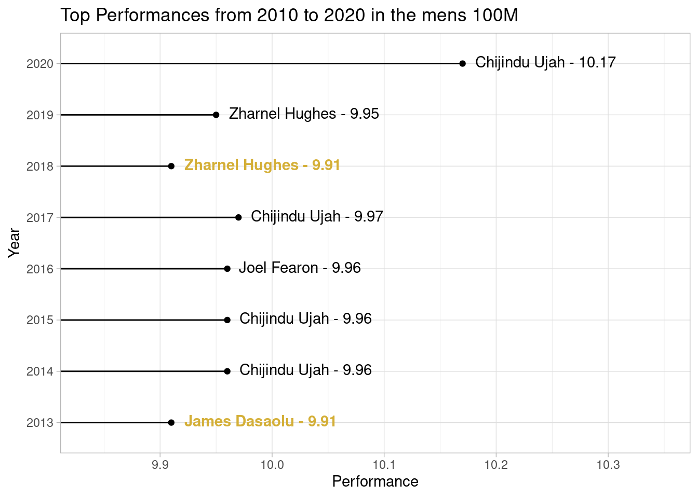

remotes::install_github("hfshr/poweRof10")
# packages used
library(poweRof10)
library(tidyverse)
library(gt)
library(emo)
library(lubridate)Introducing {poweRof10}.
R
athletics
A quick introduction to a package I created to scrape data from athletics rankings website www.thepowerof10.info.
Anyone involved in athletics will likely have used www.thepowerof10.info. For those who are unfamiliar, it is basically a database of all the rankings and results for athletics in the UK. I’ve long been both a fan and competitor (although reluctantly admit my age is starting to show) and spent a good chunk of time on the site. In a previous post I made an attempt at getting some of this data into R and building a shiny dashboard as an alternative way of presenting the results. Since then my R skills have improved a little, especially on the package making front, so I thought I would revisit the code from this old post, improve it and share it in a package.
Enough chatter, show us the package!
poweRof10
You can install from github with:
The package is really simple. It has two functions, the first gets the data for an individual athlete, while the second can be used to get the rankings for a given year, event and gender.
For individual athletes you can use get_athlete:
me <- get_athlete(fn = "Harry", sn = "Fisher", club = "Cardiff") %>%
select(event, perf, pos, venue, date) Warning: `html_session()` was deprecated in rvest 1.0.0.
Please use `session()` instead.
This warning is displayed once every 8 hours.
Call `lifecycle::last_lifecycle_warnings()` to see where this warning was generated.Warning: `submit_form()` was deprecated in rvest 1.0.0.
Please use `session_submit()` instead.
This warning is displayed once every 8 hours.
Call `lifecycle::last_lifecycle_warnings()` to see where this warning was generated.It is then possible to do any number of things with the data such as…
Most popular event:
me %>%
count(event) %>%
arrange(-n) %>%
head(5) %>%
gt() %>%
cols_label(
n = "Number of performances",
event = "Event"
)Clearly the 800m was my preferred event. Although I did take part in some hammer throwing in my early days… (I was terrible at the hammer throw 😂).
Number of podium finishes:
me %>%
mutate(pos = as.numeric(pos)) %>%
filter(pos < 4) %>%
count(pos) %>%
mutate(medal = c(medal(1), medal(2), medal(3))) %>%
select(medal, n) %>%
gt() %>%
cols_align("center") %>%
cols_label(
medal = "Position",
n = "Count"
)| Position | Count |
|---|---|
| 🥇 | 42 |
| 🥈 | 31 |
| 🥉 | 23 |
Or progression over time:
me %>%
filter(event == "800") %>%
mutate(date = as.Date(date, format = "%d %b %y"),
perf = hms::parse_hms(paste("00:" ,perf))) %>%
group_by(year = year(date)) %>%
arrange(perf) %>%
slice(1) %>%
ggplot(aes(x = year, y = perf)) +
geom_line() +
labs(y = "Performance",
x = "Year",
title = "Performance over time in the 800m") +
theme_light()
The package also includes get_event, which retrieves the rankings for a specific event, age group, gender and year. For example to get the 100m rankings for 2016 for men you would use:
event_100 <- get_event(event = "100", agegroup = "ALL", gender = "M", year = 2016, top_n = 20) Maybe you might want to compare the progression in a particular event over the last decade. We can use get_event with a combination of purrr::map_dfr to loop over several dates in one go.
To speed this up you could potentially use furrr::future_map_dfr
dates <- seq(from = 2013, to = 2020)
rankings <- map_dfr(dates, ~get_event(event ="100",
agegroup = "ALL",
gender = "M",
year = .x,
top_n = 1))Throwing together a quick visualisation:
I’ve used the great ggtext package here to add some colour to the labels and highlight the fastest time
library(ggtext)
rankings %>%
mutate(perf = as.numeric(perf),
axislow = min(perf)-min(perf)*0.01,
axishigh = max(perf)+max(perf)*0.02) %>%
mutate(label = str_c(name, perf, sep = " - "),
label = case_when(perf == min(perf) ~ paste0("<span style='color:#D4AF37'>**", label, "**</span>"),
TRUE ~ label)) %>%
{
ggplot(., aes(x = input_year, y = perf,
group = 1,
label = label))+
geom_point() +
geom_segment(aes(x=input_year, y=perf, xend = input_year, yend =min(perf)-min(perf)*0.01))+
scale_y_continuous(expand = c(0,0), limits = c(.$axislow[1], .$axishigh[1])) +
coord_flip() +
geom_richtext(fill = NA, label.color = NA, aes(hjust = -0.05)) +
labs(title = "Top Performances from 2010 to 2020 in the mens 100M",
x = "Year",
y = "Performance") +
theme_light()
}
Clearly 2020 is the outlier here, no prizes for guessing why…!
Wrapping up
So that’s a quick tour of poweRof10. Not much too it, but I’ve had some fun playing with this data so thought I’d share it anyway. Feel free to visit the package repo and raise an issue if something doesn’t work as expected.
Till next time!